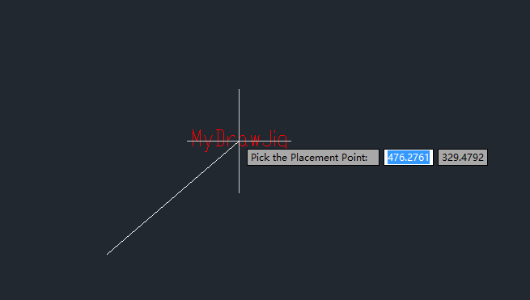

Description
In ZWCAD operations, the dynamic update of entities on the screen as the mouse moves provides a more intuitive experience for the operator. The dynamic drag effect allows precise previewing of drawing results. JIG is a critical interactive feature, and this chapter explains its usage.
Using the EntityJig Class for Dragging
The steps to create a graphical object using a derived class of EntityJig are as follows:
(1) Instantiate a derived class of EntityJig.
(2) Call the Drag function of the Editor class to start dragging. During the drag loop, sequentially call the Sampler function and Update function of the EntityJig base class until the user ends the loop. When calling Sampler, the program detects user input and displays prompt messages in the command line during dragging. When calling Update, the program dynamically updates the graphical object to create the drag effect.
(3) Check the return status of the Drag function to determine modifications during dragging. If the user cancels or terminates the drag, perform appropriate cleanup. Otherwise, add the derived class entity to the drawing database to complete the creation.
The following code demonstrates a line dragging process using the EntityJig class:
[CommandMethod("MyEntityJig")]
public void MyEntityJig()
{
Document doc = Application.DocumentManager.MdiActiveDocument;
Database db = doc.Database;
Editor ed = doc.Editor;
using (Transaction Trans = doc.TransactionManager.StartTransaction())
{
// Open model space
BlockTable BlkTbl = Trans.GetObject(db.BlockTableId, OpenMode.ForRead) as BlockTable;
BlockTableRecord BlkTblRec = Trans.GetObject(BlkTbl[BlockTableRecord.ModelSpace], OpenMode.ForWrite) as BlockTableRecord;
PromptPointOptions ptOpts = new PromptPointOptions("");
ptOpts.Message = "Set start point:";
PromptPointResult ptRes = ed.GetPoint(ptOpts);
Point3d ptStart = ptRes.Value;
if (PromptStatus.OK == ptRes.Status)
{
Polyline tmpLine = new Polyline();
tmpLine.AddVertexAt(0, new Point2d(ptStart.X, ptStart.Y), 0, 0, 0);
tmpLine.AddVertexAt(1, new Point2d(ptStart.X, ptStart.Y), 0, 0, 0);
tmpLine.AddVertexAt(2, new Point2d(ptStart.X + 6, ptStart.Y + 6), 0, 0, 0);
BlkTblRec.AppendEntity(tmpLine);
Trans.AddNewlyCreatedDBObject(tmpLine, true);
bool is_cancel = false;
MyEntityJig myEntJig = new MyEntityJig(ref tmpLine, 6, is_cancel);
PromptResult pSignRes = ed.Drag(myEntJig);
if (myEntJig.isCancel)
{
is_cancel = myEntJig.isCancel;
myEntJig = new MyEntityJig(ref tmpLine, 6, is_cancel);
ed.Drag(myEntJig);
}
Trans.Commit();
}
}
}
class MyEntityJig : EntityJig
{
public bool isCancel = false;
public Point3d mEndPt, mIntPt;
Double labelLineLength = 0;
Polyline pline;
public MyEntityJig( ref Polyline pline, double labelLineLength, bool isCancel) : base(pline)
{
this.pline = pline;
this.labelLineLength = labelLineLength;
this.isCancel = isCancel;
}
protected override SamplerStatus Sampler(JigPrompts prompts)
{
JigPromptPointOptions jigOpts = new JigPromptPointOptions();
jigOpts.UserInputControls = (UserInputControls.Accept3dCoordinates | UserInputControls.NullResponseAccepted);
jigOpts.Message = "\nPick the Placement Point:";
PromptPointResult res = prompts.AcquirePoint(jigOpts);
if (res.Status == PromptStatus.Cancel | res.Status == PromptStatus.Keyword)
isCancel = true;
mEndPt = res.Value;
return SamplerStatus.OK;
}
protected override bool Update()
{
try
{
if (mEndPt.X > pline.GetPoint2dAt(0).X)
{
pline.SetPointAt(1, new Point2d(mEndPt.X, mEndPt.Y));
pline.SetPointAt(2, new Point2d(mEndPt.X + labelLineLength, mEndPt.Y));
}
else
{
pline.SetPointAt(1, new Point2d(mEndPt.X, mEndPt.Y));
pline.SetPointAt(2, new Point2d(mEndPt.X - labelLineLength, mEndPt.Y));
}
}
catch (System.Exception)
{
return false;
}
return true;
}
}
Execution Result:
After executing the MyEntityJig command, the user is prompted to select a starting point ("Set start point:"). Dragging the mouse displays a red line following the cursor. The line is finalized when the user selects the second point.
Key Parameter Explanation:
In the Sampler function, interactive operations are initiated by instantiating a prompt options class (e.g., JigPromptXXXOptions) to detect user input. Use functions like AcquireXXX from the JigPrompts class (a parameter of Sampler) to obtain user input (PromptXXXResult class). The table below lists common classes and functions related to Jig interactions.
| Function Name | Purpose | Prompt Options Class | Prompt Result Class |
|---|---|---|---|
| AcquireAngle | Prompt user to input an angle | JigPromptAngleOptions | PromptDoubleResult |
| AcquireDistance | Prompt user to input a distance | JigPromptDistanceOptions | PromptDoubleResult |
| AcquirePoint | Prompt user to enter a point | JigPromptPointOptions | PromptPointResult |
When calling the Sampler function, the cursor type can be set through the cursor property. The return value of the CursorType property is enumerated in the following table as CursorType:
| Enum Value | Function |
|---|---|
| NoSpecialCursor | Similar to the default cursor, a rubber band line (straight line) is displayed between the base point and the cursor center |
| Crosshair | Default cursor (crosshair) |
| RectangularCursor | Rectangular window cursor aligned with the view UCS direction |
| RubberBand | Similar to the default cursor, a rubber band line (straight line) is displayed between the base point and the cursor center |
| NotRotated | Crosshair cursor aligned with the view UCS direction |
| TargetBox | OSNAP cursor, similar to the EntitySelect cursor in form, with its size controlled by the system variable APERTURE |
| RotatedCrosshair | Crosshair cursor aligned with the current UCS direction |
| CrosshairNoRotate | Crosshair cursor aligned with the current UCS direction, with a rubber band line (straight line) displayed between the base point and the cursor center |
| Invisible | No cursor displayed |
| EntitySelect | Cursor in the form of an entity selection box |
| Parallelogram | Rectangular window cursor aligned with the current UCS direction (may appear as a parallelogram) |
| EntitySelectNoPerspective | Cursor form similar to EntitySelect but supports perspective view, used when determining a precise point on the selected entity |
| PickfirstOrGrips | Similar to the default cursor |
To restrict user input, use the UserInputControls property of the JigPromptXXXOptions class. The return value of this property is the UserInputControls enumeration, as shown below:
| Enum Value | Function |
|---|---|
| GovernedByOrthoMode | No setup required |
| NullResponseAccepted | Disallow empty input |
| DoNotEchoCancelForCtrlC | Suppress the display of "*Cancel*" when cancelling an operation |
| DoNotUpdateLastPoint | Disable updating the last point |
| NoDwgLimitsChecking | Disable drawing limits checking |
| NoZeroResponseAccepted | Disallow zero input |
| NoNegativeResponseAccepted | Disallow negative input |
| Accept3dCoordinates | Allow 3D point input |
| AcceptMouseUpAsPoint | Treat mouse button release as the selected point |
| AnyBlankTerminatesInput | Spacebar terminates string input |
| InitialBlankTerminatesInput | Leading spacebar terminates string input |
| AcceptOtherInputString | Allow non-keyword string input |
| GovemedByUCSDetect | Applies to UCS detection |
| NoZDirectionOrtho | Disable ortho mode in the Z direction |
Using the DrawJig Class for Dragging
To create a dragging effect when generating graphical objects, besides using the EntityJig class, you can derive a new class from the DrawJig class in the EditorInput namespace. This class represents the graphical object to be created. Override the Sampler and WorldDraw functions of the DrawJig class, then add the derived class entity to the drawing database to complete the creation.
Steps to implement Jig using the DrawJig class:
(1) Instantiate a derived class of DrawJig and automatically override the Sampler and WorldDraw functions. When the Sampler function is called, the program detects user input and establishes prompt text, which is displayed in the command line during dragging. When the WorldDraw function is called, the program dynamically updates the graphical object being created, producing a real-time dragging effect.
(2) Call the Drag function of the Editor class to start dragging. During the dragging loop, sequentially call the Sampler function and WorldDraw function of the DrawJig base class until the user ends the loop.
(3) Check the return status of the Drag function and determine the modifications made during dragging. If the user cancels or terminates the drag, perform appropriate cleanup operations. The cursor type during dragging, restrictions on user input, and usage are identical to the EntityJig class described in the previous section.
Note:
The EntityJig class can only drag a single object, while the DrawJig class can drag multiple objects with more concise code. The methods in this section also apply to editing operations with dragging effects (e.g., copy, move).
The following code uses the EntityJig class to implement simultaneous dragging of a line and multi-line text:
[CommandMethod("MyDrawJig")]
public void MyDrawJig()
{
Document doc = Application.DocumentManager.MdiActiveDocument;
Database db = doc.Database;
Editor ed = doc.Editor;
using (Transaction Trans = doc.TransactionManager.StartTransaction())
{
// Open model space
BlockTable BlkTbl = Trans.GetObject(db.BlockTableId, OpenMode.ForRead) as BlockTable;
BlockTableRecord BlkTblRec = Trans.GetObject(BlkTbl[BlockTableRecord.ModelSpace], OpenMode.ForWrite) as BlockTableRecord;
PromptPointOptions ptOpts = new PromptPointOptions("");
ptOpts.Message = "Set start point:";
PromptPointResult ptRes = ed.GetPoint(ptOpts);
Point3d ptStart = ptRes.Value;
if (PromptStatus.OK == ptRes.Status)
{
MText text = new MText();
text.Location = new Point3d(ptStart.X, ptStart.Y, 0);
text.Contents = "MyDrawJig";
text.ColorIndex = 1;
text.Attachment = AttachmentPoint.MiddleCenter;
Polyline tmpLine = new Polyline();
tmpLine.AddVertexAt(0, new Point2d(ptStart.X, ptStart.Y), 0, 0, 0);
tmpLine.AddVertexAt(1, new Point2d(ptStart.X, ptStart.Y), 0, 0, 0);
tmpLine.AddVertexAt(2, new Point2d(ptStart.X + 6, ptStart.Y + 6), 0, 0, 0);
BlkTblRec.AppendEntity(text);
Trans.AddNewlyCreatedDBObject(text, true);
BlkTblRec.AppendEntity(tmpLine);
Trans.AddNewlyCreatedDBObject(tmpLine, true);
var flag = text.IsWriteEnabled;
bool is_cancel = false;
MyDrawJig myEntJig = new MyDrawJig(ref text, ref tmpLine, 6, is_cancel);
PromptResult pSignRes = ed.Drag(myEntJig);
if (myEntJig.isCancel)
{
is_cancel = myEntJig.isCancel;
myEntJig = new MyDrawJig(ref text, ref tmpLine, 6, is_cancel);
ed.Drag(myEntJig);
}
Trans.Commit();
}
}
}
class MyDrawJig : DrawJig
{
public bool isCancel = false;
public Point3d mEndPt, mIntPt;
Double labelLineLength = 0;
MText mtext;
Polyline pline;
public MyDrawJig(ref MText mtext, ref Polyline pline, double labelLineLength, bool isCancel)
{
this.mtext = mtext;
this.pline = pline;
this.labelLineLength = labelLineLength;
this.isCancel = isCancel;
}
protected override SamplerStatus Sampler(JigPrompts prompts)
{
JigPromptPointOptions jigOpts = new JigPromptPointOptions();
jigOpts.UserInputControls = (UserInputControls.Accept3dCoordinates | UserInputControls.NullResponseAccepted);
jigOpts.Message = "\nPick the Placement Point:";
PromptPointResult res = prompts.AcquirePoint(jigOpts);
if (res.Status == PromptStatus.Cancel | res.Status == PromptStatus.Keyword)
isCancel = true;
mEndPt = res.Value;
return SamplerStatus.OK;
}
protected override bool WorldDraw(WorldDraw draw)
{
try
{
if (mEndPt.X > pline.GetPoint2dAt(0).X)
{
pline.SetPointAt(1, new Point2d(mEndPt.X, mEndPt.Y));
pline.SetPointAt(2, new Point2d(mEndPt.X + labelLineLength, mEndPt.Y));
mtext.Location = mEndPt;
}
else
{
pline.SetPointAt(1, new Point2d(mEndPt.X, mEndPt.Y));
pline.SetPointAt(2, new Point2d(mEndPt.X - labelLineLength, mEndPt.Y));
mtext.Location = new Point3d(mEndPt.X - labelLineLength, mEndPt.Y, 0);
}
draw.Geometry.Draw(mtext);
draw.Geometry.Draw(pline);
}
catch (System.Exception)
{
return false;
}
return true;
}
}
Execution Result:
After executing the MyDrawJig command, the user is prompted to "Set start point:". Dragging the mouse displays a line and "MyDrawJig" multi-line text following the cursor. The user selects the second point to complete the drawing.
